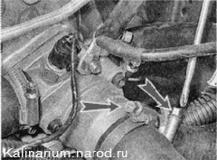
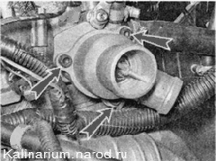
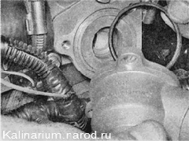
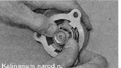
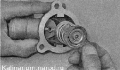
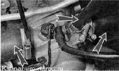
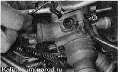
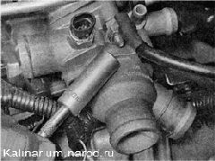
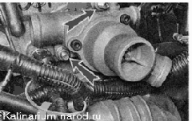
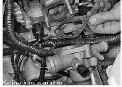

Термостат - снятие, замена и установкаЗамена 1. Сливаем охлаждающую жидкость. 2. Снимаем воздушный фильтр. 3. Крестовой отверткой ослабляем хомуты крепления двух шлангов к патрубкам термостата.  4. Отсоединяем шланги от патрубков термостата. 5. Шестигранным ключом на 5 мм отворачиваем три стяжных болта корпуса термостата. 6. Разъединяем корпус термостата и снимаем резиновое уплотнительное кольцо. Поврежденное уплотнительное кольцо заменяем. 7. Надавив, поворачиваем упорную пластину пружины термостата...   Проверить работоспособность термостата можно, опустив его в емкость с водой, разогретой до температуры, близкой к температуре кипения. Клапан должен открыться. 8. Собираем и устанавливаем термостат в обратной последовательности. Снятие 1. Для снятия термостата в сборе, отсоединяем два шланга от патрубков крышки термостата (см. выше п. 1—4). 2. Аналогично отсоединяем еще три шланга от патрубков термостата. 3. Отсоединяем колодку проводов отдатчика температуры охлаждающей жидкости. 4. Торцовым ключом с глубокой головкой на 13 мм отворачиваем гайку крепления «массового» провода.  5. Тем же ключом отворачиваем две гайки крепления термостата к головке блока цилиндров. 
6. Снимаем термостат со шпилек и удаляем уплотнительную про кладку. 
7. При необходимости отворачиваем датчик температуры охлаждающей жидкости. Установка 1. Устанавливаем термостат в обратной последовательности, заменив уплотнительную прокладку новой. 2. Заполняем систему охлаждающей жидкостью 3. Убеждаемся в отсутствии подтекания жидкости в местах соединений шлангов с термостатом. При необходимости подтягиваем хомуты крепления шлангов. |